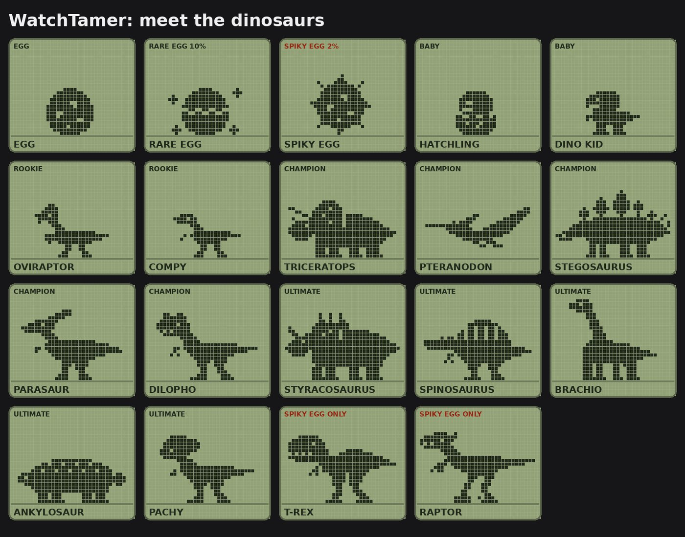

WatchTamer
Una mascota virtual de dinosaurio, al estilo de los 90, para tu Apple Watch.
Muy pronto en el App Store
- Cría un dinosaurioHaz que salga del huevo, dale de comer, límpialo y míralo crecer en cada etapa.
- Camina para alimentarlo y entrenarloSolo camina: cada 250 pasos alimentan a tu dino, cada 500 le dan proteína y cada 1,000 son un entrenamiento, incluso con la app cerrada.
- Lucha con tus amigosIntercambien códigos de batalla cortos y los dos relojes muestran la misma pelea. No hace falta internet.
- Huevos rarosCada huevo nuevo es cuestión de suerte. De los más raros nace un T-Rex o un Raptor.
- Recordatorios amablesNotificaciones opcionales cuando tu dino tiene hambre, está débil o necesita limpieza.
Apple Watch con watchOS 26.4 o posterior. No necesita una app para iPhone.